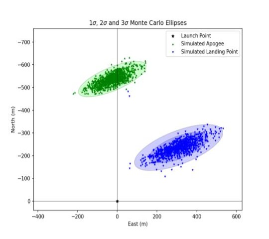
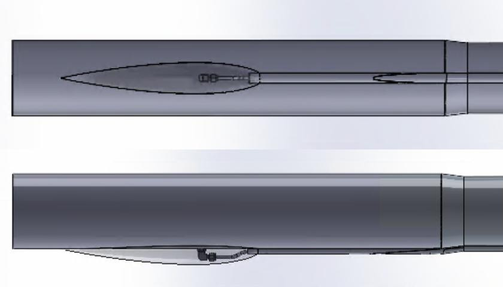
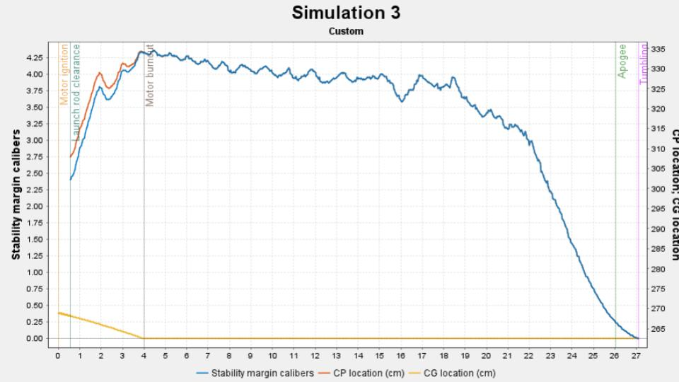
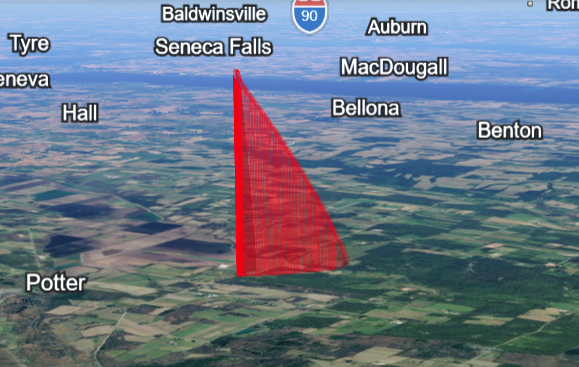
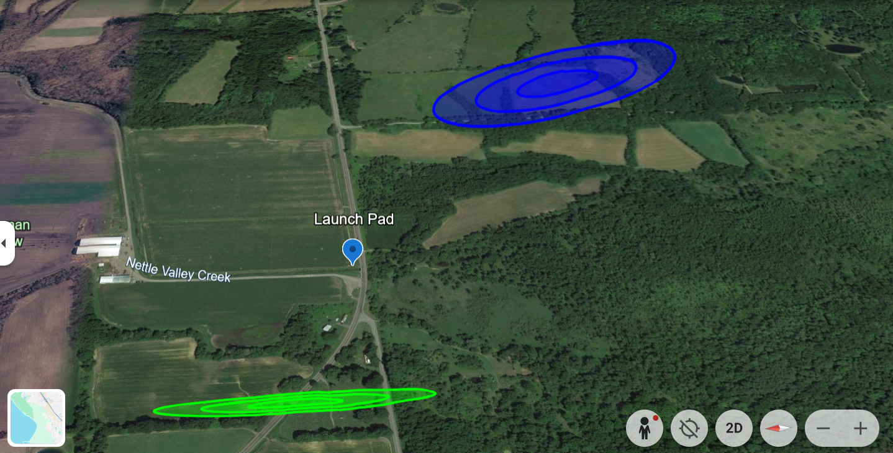
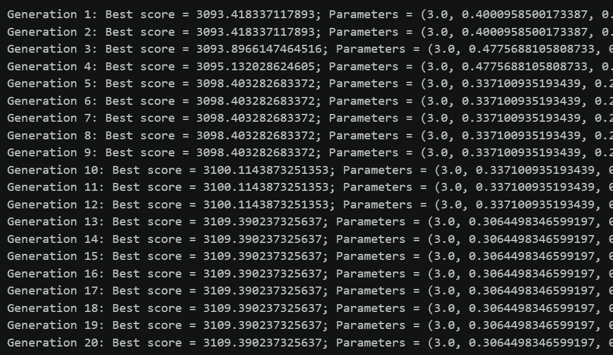
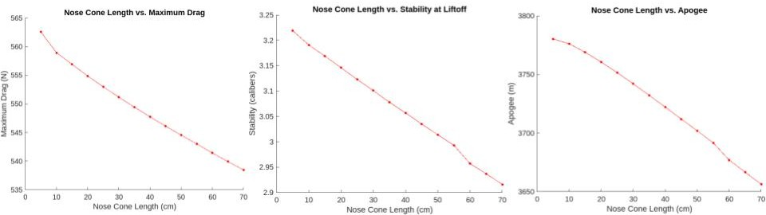
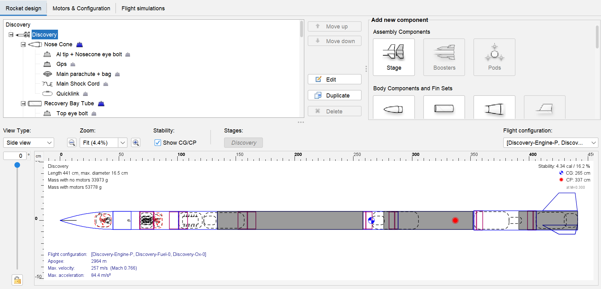

Overview
What is UTAT Rocketry?
UTAT Rocketry is an undergraduate research and development team competing at Launch Canada. Unlike teams that build a single vehicle each year, UTAT Rocketry tries to push university-level rocketry technology forward — developing hybrid and liquid bipropellant motors and multi-stage architectures the team has never flown before.
I joined as an Aerodynamic Member in September 2024 and was promoted to Aerodynamic Co-Lead in January 2026. My work centers on stability and aerostructure analysis, flight simulation, and building automation tools that lets the aerodynamics subteam evaluate many rocket configurations quickly and confidently.
Rocket Roster
Rockets I've contributed to
Every rocket is the product of a multidisciplinary team, integrating propulsion, airframe, structure, recovery, avionics, software and aerodynamics into a single flight-ready vehicle.
Defiance
The team's first hybrid-motor rocket, used to validate hybrid propulsion integration. It is also the first experimental hybrid launch in Canada with the highest altitude achieved by Student Research and Developed (SRAD) advanced engine in Canada.
Enterprise
A solid-motor test vehicle flown to de-risk airframe and recovery systems ahead of Discovery, the team's first liquid rocket program.
Discovery
The team's first-ever liquid bipropellant rocket. It also include new technologies, such as non-structural aero-body and dual-separation dual-deployment recovery.
Dauntless
The team's first double-stage solid rocket, which pushed the teams analyses forward and served as a stepping stone for the development of a hybrid-solid staging rocket.
Density
The team's second hybrid rocket, currently in the design phase.
Stability & Aerostructure Analysis
Designing aerosurfaces for predictability
Across dozens of nose cone and fin iterations in OpenRocket, I ran aeroelasticity, fin flutter, and stability margin analyses to size aerosurfaces against explicit targets: 1.5–2 caliber margins for subsonic vehicles and 3–6 caliber margins for supersonic vehicles, held across a 0–30 km/h wind envelope, with every design verified against a 2× flutter safety factor along the full flight trajectory.
I also extracted key flight performance metrics — apogee, max velocity, Mach number, and CG travel — through iterative OpenRocket simulations to inform aerosurface design trade-offs before committing to a build.
1.5–3 cal
Stability margin achieved across programs
2×
Fin flutter safety factor maintained
0–30 km/h
Wind envelope analyzed
40+
Nose cone & fin design iterations
Simulation Automation & Tooling
Turning manual analysis into repeatable pipelines
Monte Carlo dispersion automation
Automated Monte Carlo dispersion analyses for four rocket programs in RocketPy, modeling manufacturing tolerances and wind variability as normal distributions to predict landing zones for nominal, drogue-failure, and ballistic descent scenarios, and verifying safety compliance via KML export to Google Earth.
Cross-validation pipeline
Built a Jupyter Notebook that automatically constructs RocketPy simulations directly from OpenRocket files and scattered data sources — Excel sheets and RSE motor files — reducing cross-validation tasks from several hours to four seconds.
Genetic algorithm optimization
Implemented a Genetic Algorithm Multidisciplinary Optimization framework integrated with RocketPy to optimize aerosurface geometry, replacing manual parameter sweeps with an automated search across hundreds of design iterations.
Custom Simulation Development
Building multi-stage dispersion support that didn't exist

Extending RocketPy's core classes
RocketPy does not natively support Monte Carlo dispersion analysis for multi-stage flight. To assess landing risk for Dauntless, the team's first double-stage rocket, I modified and extended the RocketPy codebase — implementing custom classes and overriding core methods to propagate dispersion through a staging event rather than a single continuous trajectory.
Why it mattered: without staged dispersion modeling, the team had no quantitative way to verify recovery safety compliance for a double-stage flight — this extension made that risk analysis possible for the first time.
CFD & Fairings
Characterizing drag on externally mounted hardware

Fairing design through simulation
Coordinated the design of fairings for externally mounted hardware, running CFD simulations in ANSYS Fluent to characterize aerodynamic loading and drag impact and guide the fairing geometry before manufacturing.
Team Leadership
Coordinating aerodynamics across three concurrent programs
Leading a 5-person aerodynamics subteam. Directing aerosurface design and flight analysis simultaneously across Discovery, Dauntless, and Density — the team's first liquid rocket, first double-stage rocket, and second hybrid rocket.
Running weekly cross-subteam alignment. Weekly meetings to track progress and align aerodynamics deliverables with propulsion, airframe, recovery, and avionics.
Gallery
Analysis and design documentation





